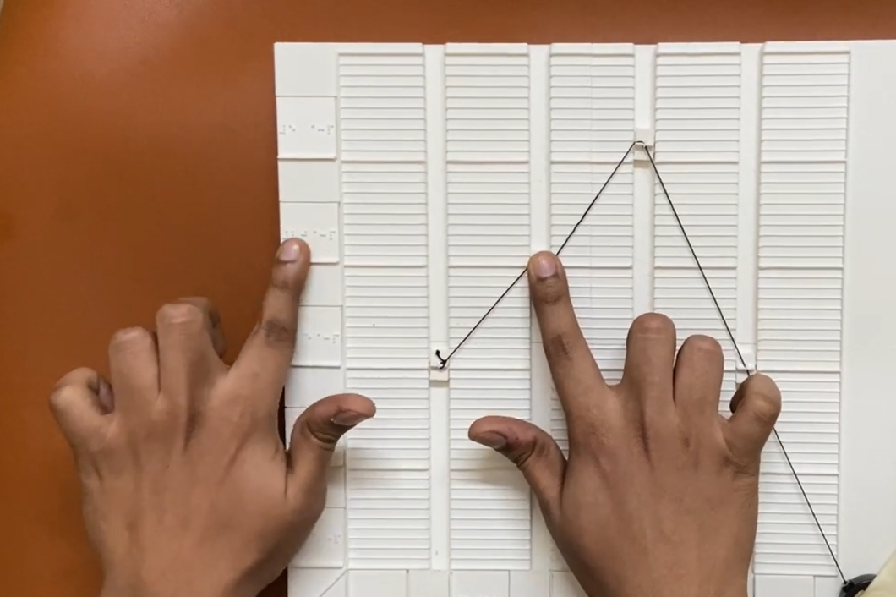

A Tangible solution which allows the visually impaired to feel as well create their own line charts

01
Introduction
We would be suggesting a novel method, through a
prototype, to create their own specific type of line
chart. The prototype would be initially taught by
Teachers of the visually impaired. But later the
students can learn to use the prototype on their
own. This prototype would help the users
understand the concept of line charts as well as
depict them.
MILESTONE ALERT
This is the first interactive prototype which allows the blind to create their own line charts
with this precision
Video for quick summary
The working is demonstrated in the video below. Focus is on explaing the
prototype, reading a chart and changing values.
02
Understanding the visually impaired users
Visually impaired is a blanket term that refers to a condition where the person does not have a
perfect or near perfect
vision, which cannot be repaired via usual means, such as glasses or contacts. The major medium of
communication is
through voice or touch. Understanding charts is hard as visually impaired people find it difficult
to make a mental
model of the visualization. Also the mental model of the visually impaired is different from that of
a sighted person.
03
Existing methods of line chart accessibility
The current methods of line chart accessibility could be divided into majorly 2 types: textual and
tactiles.
Charts are not taught properly in schools.
They have heard of concepts of bar, pie and line charts but are not confident
on
explaining
One person tried to demonstrate bar charts:
They demonstrated on it on the palm
He mentioned that there are 2 axes perpendicular to each other.
They are aware that values are represented on 'horizontal' bars (they showed
with
their fingers)
COMPUTER TEACHER
The students are taught some applications: Windows, Office, Browsers and their
icons
The sample layout is presented for these applications using swell sheets.
The students are taught the concepts of lines, shapes, inclinations, textures
again
using swell papers.
The school normally uses a JAWS screen
reader. JAWS is costly but has several
features.
Students are taught several shortcuts for completing tasks in the system.
MATHEMATICS TEACHER
Most blind schools don't have mathematics as a subject.
Students are taught using several tools: like abacus, tactile graph kit, Taylor
frame and Braille slate
Students are taught concepts of basic arithmetic operations using Taylor frames.
For charts, people are taught using graph kits (swell paper books) which contain
embossed diagrams.
Students at times go to regular secondary schools if they wish to learn higher
mathematics.
06
Existing Implemented solutions
Pushpin board technique
The students are taught to plot a series of x and y values on the board using the pushpins,
then they are joined together with the rubber bands.
Limitations:
No proper demarcation of the grids
The points(pins) are very sharp
Rubberband can snap and pushpins might fly off in random directions.
Charts on Swell paper
In this we can see embossed paper with grid lines and clay to make a line chart.
A person can compare multiple lines as we go.
Limitations:
No sure how to handle the clay
Movement of clay affects other points
No units in between 2 labels
3D printed charts
The charts in here are 3d printed along with the grids and labels and can be felt by
touching the ridges.
Limitations:
The charts are static
These dont enable people to make their own charts
High printing cost if multiple graphs required
Tangible Graph Builder
This is a tangible graph builder in which
the author has explored creation of charts using basic 3d objects. The grid is made up of
straws. Limitations:
The points on the chart(3D objects) can be toppled as the visually impaired moves
his/her hands
There no physical connection between the points of a line
The grid is flimsy and may cause hindrance to the user
07
Brainstorming
Possible Gestures
Feedback types
Should (or shouldn't) be
08
Ideation sketches
09
Prototype Design
10
Components Design
Orientation piece
If the participant follows a raised diagonal ridge from the bottom left corner, s/he
will reach
the centerpiece of the
prototype (chart grid)
Labels
There are slots on the left of y axis and bottom of x axis for labels. The labels are
sort of
plugs which magnetically attach
in the slots. The labels are square tiles with braille printed onto them.
The chart grid
The ridges are continuous in nature, that is, a ridge which has originated from y axis
runs till
the end of the
prototype despite the interruptions by the slots.
Knob
The knob can move in the slot in both directions using a push or pull on the knob.
Whenever the
knob moves it provides
tactile feedback.
11
Prototype specifications
12
Modularity
The design of modular pieces is shown in the image. However some part of modularity has been
retained in labels. The
labels have a plug-switch mechanism along with magnets. The labels on both the axes can be
changed
according to the
convenience.
13
Working and Testing
Here we can see testing of the prototype by a blind person. The person is asked
to
think
aloud while doing the task given.
14
Testing protocol
Participants are initially briefed about charts and tables. In charts too, They are
briefed only
about line charts. They
were also explained the concepts of x and y axis through a smaller prototype.
Initially the moderator places the supplementary prototype in front of the participant and
explains
the basic concepts
and allows the person to feel the prototype.
Later the participant is introduced to the main prototype. The prototype is aligned to the
participant. Initially the
participant is encouraged to feel the axes of the prototype.
After the training, the participant performs the tasks. When the participant was
ready, s/he
heard
the title of a graph.
The participant was instructed that
after s/he finds the answer, s/he should immediately say it aloud.
On each chart the participant is asked to perform 4 tasks. The moderator informs at the end of
every
task. Below is the
order of the tasks for each participant and it remains the same for all.
Reading a chart
Finding the highest peak and lowest dips
Understanding the trends in the chart
Correlating the charts with a given table
15
Testing insights
2 of 4 people found it a little
difficult to initially get familiar with
the
concept
of line charts.
All of them had heard about line
charts but had never learnt about them.
People also used the raise ridge
(on the label) to guide themselves to the
value of
x or y.
2 of 4 participants were easily
able to move the knobs after figuring out
the
direction of force.
They also complained that the
labels were small and not easy to read.
The people also insisted on
cheaper solutions which could be affordable.
One of the participants wished
that the product can be learnt on its own
without the
help of a separate
instructor.
People also insisted on having
arrow markers indicating the directions of
x
and y
axes.
16
Limitations
The solution
focus was very narrow and
focussed only on line charts.There were
5 entries on
y axis.
The spring
coil mechanism had its flaws. The
farthest knob was difficult to
move as it had
the highest tension.
Even though
these participants were unaware of
the concepts of line charts,
students should
have been considered for
the testing.
The braille
labels could have been bigger so
as to promote easier
understanding.
Ease of
learning factor has not been taken
into consideration.
The
line charts represented in this design closely resemble the bar charts.
Learnability aspect and how the learnings after this experiment can be used
later in their
life is also not
measured.
The
coiled string poses some amount of threat if it gets snapped out of place.
Knob
design and the design to keep the string taught could be improved.
Scaling up to add more values also leads to drastic increase of size of
prototype.